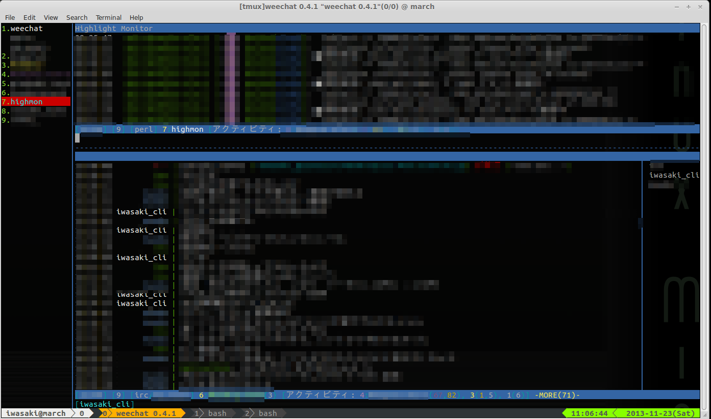

11月 21, 2013
前から tmux と組み合わせて irc bouncer 的な使い方をしていた weechat ですが。
いい加減本格的に移行したのでメモ。
ちなみに私は今のところ Ubuntu13.10 な 24時間起動のサーバ立てて使っとります。
インストール
ググって出てくる情報見るとapt版だとISO-2022-JPガーみたいな話あるようですが、最近は特に問題ないようです。
sudo aptitude install weechat
プラグインとか
デフォで起動してもいいかもしれないですが、ここは先人の知恵に従って便利なプラグインを導入します。
今のところは最低限以下のものだけ入れるだけでもだいぶ違います。
- weeget
weechatのプラグインを管理できるプラグイン
- growl
ハイライトしたキーワードをネットワーク経由でGrowl通知してくれる。
- highmon
ハイライトしたキーワードのレスだけを流してくれるバッファができる。
- buffers
横に接続中のサーバ、入室中のチャンネルなどバッファの一覧を出してくれる。
- go
指定したチャンネルにダイレクトにジャンプできる。関係ないチャンネルを既読にしないで飛べるので地味に便利。
まずはweegetを導入して、他のプラグインを入れてあげればいい感じです。
起動/設定
~/.weechat/logger.conf
ロギングはしときたいんでloggerの設定を以下のように変更します。
mask = "%plugin.$name/%Y%m%d.weechatlog"
~/.tmux.conf
tmux 内であげっぱなしにするので以下の設定も追加しときます。これをやっとかないと表示がおかしくなります。
基本的にIRC内で流れていることは常にキャッチしておきたいのです。(まあbouncer使えよって話かもしれないですが)
set -g default-terminal "screen-256color"
設定
## 普通のIRCサーバの場合
/server add example1 irc.example1.com/6667
## SSL かつ 起動時に自動で接続するように
/server add example2 irc.example2.com/6667 -ssl -autoconnect
オレオレ証明書(自己署名証明書)なSSLな場合は以下も実行します。
/set irc.server.example.ssl_verify = off
自分の名前とか拾いたいワードをhighlightに追加しときます
/set weechat.look.highlight *iwasaki*,*laughk*
growl プラグイン接続先も追加
当然クライントPCにGrowlが入っていることが条件。ネットワーク経由での通知もできるようにしとく。
## 通常使うクライアントPCのIP情報
/set plugins.ver.python.growl.hostname 192.168.xxx.yyy
## クライアント側のGrowlパスワード
/set plugins.var.python.growl.password ****************
go プラグインのキーバインドもやっとく。
ひとまずバッティングしなさそうだった Alt+g で
iso-2022-jp なチャンネルは文字コードの設定も忘れずに。
特にweechatは結構いい感じに文字コード直してくれたりするんで自分では化けてることに気づかないケースもあります。
## 対象のチャンネルで
/charset iso2022jp
こんな感じ。まあほぼ見せられないのでモザイクだらけですが

11月 18, 2013
これまでたまに ラフなラボ の方でブログを書いてましたが
もう少し効率良くアウトプットしたいこともあって、
tinkerer + githubpage のこちらの環境に移行しました。
やっぱりReSTで書き留めたものをそのままBlogとして公開できるのは楽でいいですね。
(Octopress使わなかったのはMarkdownよりもReST使いたいから)
旧ブログを始めた頃に比べると大分目指すべき方向性も違ってきてしまっていたし、
まあ調度良いかなと。
このブログを立てる際の作業ログも後ほどまとめる予定。
ほとんど自分で面倒見なければいけないのはなかなか手間がかかった、、